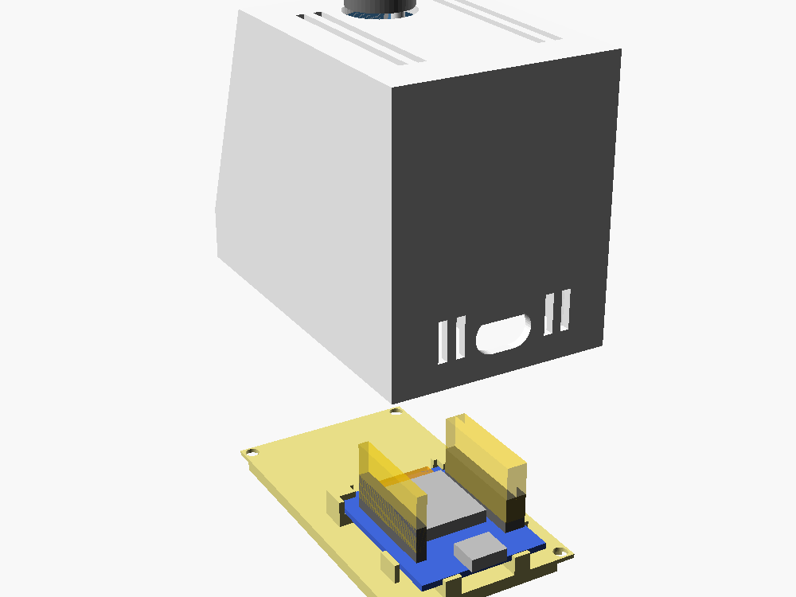
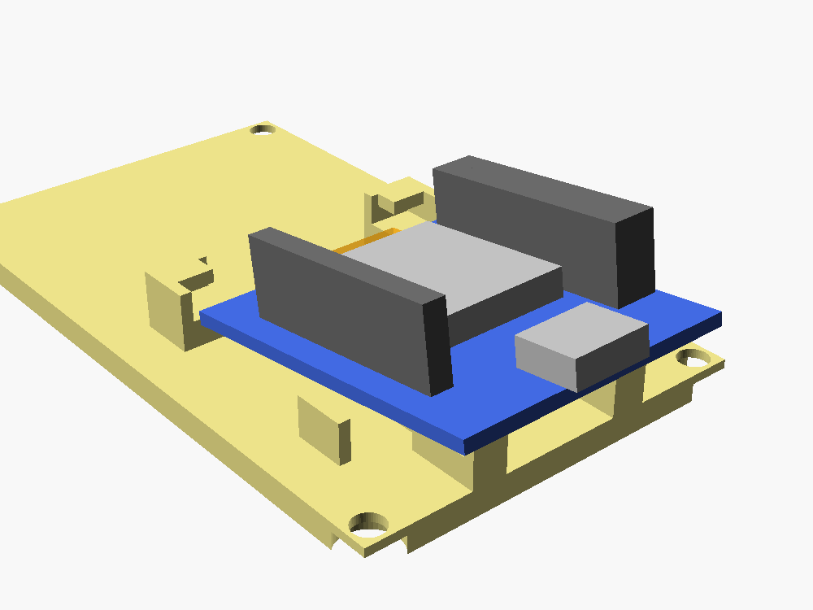
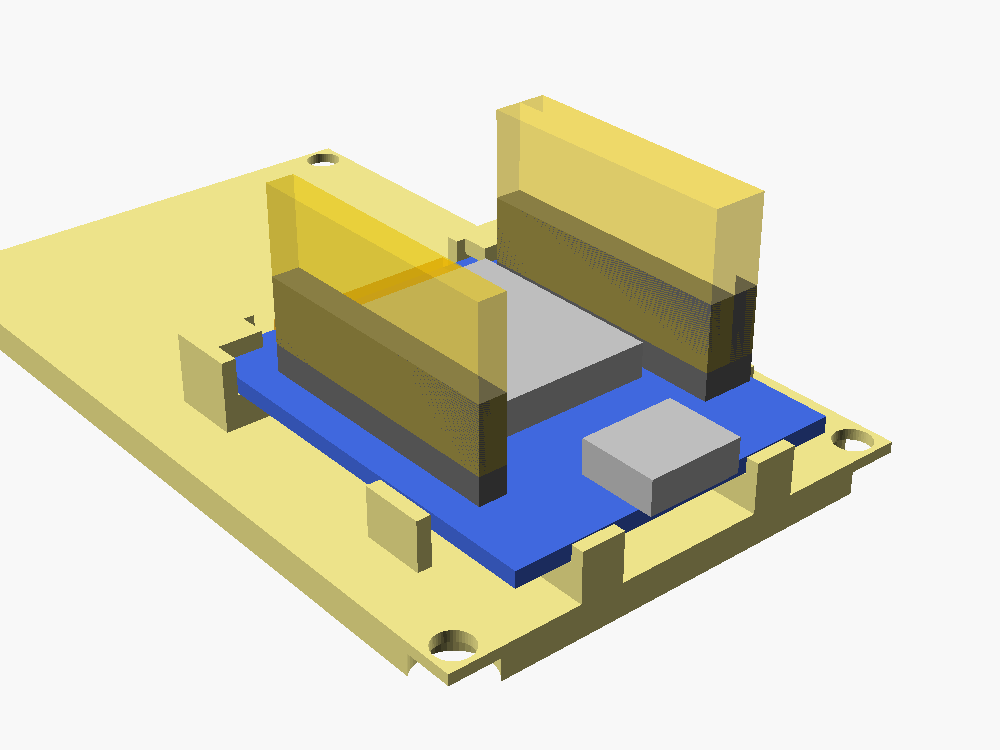
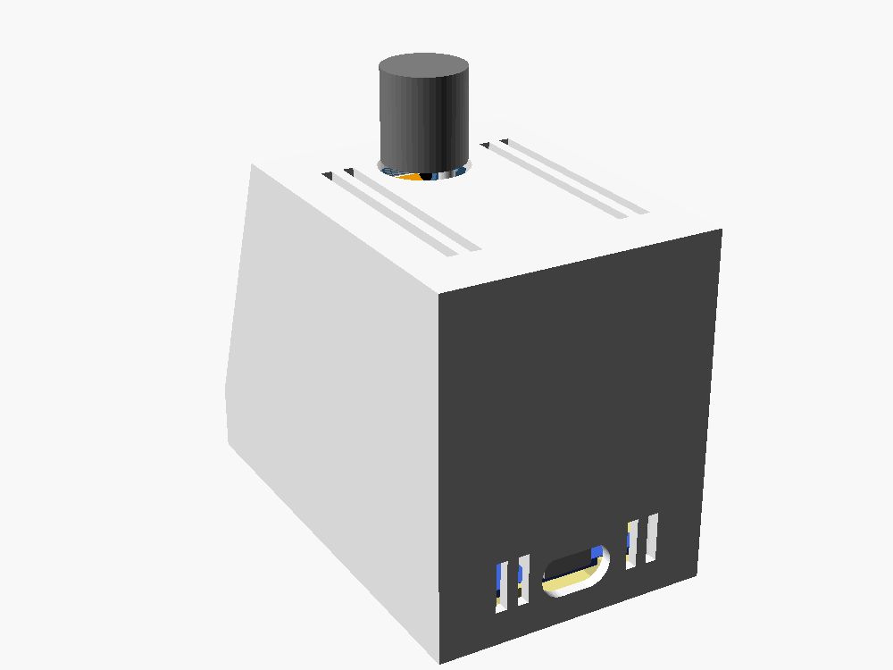
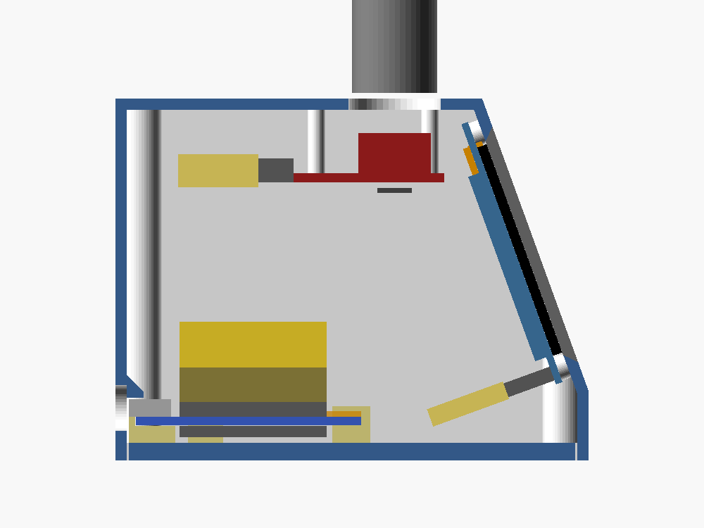

The case is two printed parts. The ESP32 board sits on the bottom part, and the top part covers it. Pictures are from the case model.
shellfloor plateESP32 boardplugs on the pins

The shell is like a box with no bottom. The screen and the knob are fixed inside it. The floor plate is the bottom, and the ESP32 board sits on it.

The floor plate lies on the desk, on its own. Hold the board with the USB end a little higher and slide the other end forward, under the two tabs.

Lower the USB end until the board lies flat. Two small blocks behind it stop it sliding back. Then push the screen's and the knob's plugs onto the pins.

Lower the shell over the floor plate and put in 4 screws from underneath. The USB socket ends up behind the hole in the back.

This is the closed case cut through the middle. At the front end of the board, the tabs hold it down. At the back end, a small ledge inside the shell sits just above the USB socket. Nothing clicks and nothing is glued.